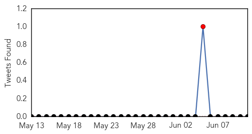

Dengue Fever
30-Day Web Trend
1 alerts, 1 warnings

30-Day Twitter Trend
0 alerts, 0 warnings

Article Locations

Article Confidences

Top Articles:
- 0.961
- The Island
- 0.939
- A germ stopper for blood products
- 0.805
- National Virology Institute in Alappuzha Gets Centre's Nod
- 0.739
- Ignorant residents, foreigners contribute to rise in dengue cases
- 0.588
- Project Premonition brings researchers together to detect diseases before they become an outbreak
- 0.556
- Dengue completely under control in Punjab
- 0.512
- Gulab Devi to share cardiac burden
Top Tweets:
-
No tweets found for Jun 11, 2015
Measles
30-Day Web Trend
0 alerts, 0 warnings

30-Day Twitter Trend
1 alerts, 0 warnings

Article Locations

Article Confidences

Top Articles:
- 0.897
- PAHO and WHO Advises Measles and Rubella Vaccination for Travelers to the 2015 Americas Cup
- 0.887
- Indian woman with TB triggers health scare in US
- 0.862
- Fairbanks Man Likely Contracted Measles in Mongolia
- 0.830
- Measles Scare
- 0.652
- Hong Kong reports five measles cases since May, epidemiologically linked
- 0.616
- School vaccination rates healthy
- 0.615
- How A Nazi Mass Murderer Became Executive For Vaccines In America
- 0.520
- Abuse of California's vaccine personal belief exemptions–wealthy, white and mostly liberal
Top Tweets:
-
No tweets found for Jun 11, 2015